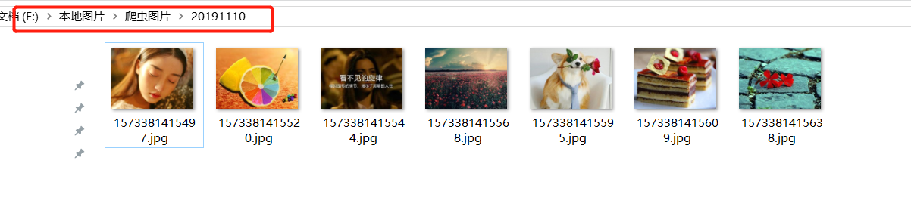

爬虫是什么
这里引用一下 wiki 中关于 网络爬虫的定义，相信大家看过后会有一个清晰的认识
网络爬虫（英语：web crawler），也叫网络蜘蛛（spider），是一种用来自动浏览万维网的网络机器人。其目的一般为编纂网络索引。
网络搜索引擎等站点通过爬虫软件更新自身的网站内容或其对其他网站的索引。网络爬虫可以将自己所访问的页面保存下来，以便搜索引擎事后生成索引供用户搜索。
爬虫访问网站的过程会消耗目标系统资源。不少网络系统并不默许爬虫工作。因此在访问大量页面时，爬虫需要考虑到规划、负载，还需要讲“礼貌”。 不愿意被爬虫访问、被爬虫主人知晓的公开站点可以使用robots.txt文件之类的方法避免访问。这个文件可以要求机器人只对网站的一部分进行索引，或完全不作处理。
互联网上的页面极多，即使是最大的爬虫系统也无法做出完整的索引。因此在公元2000年之前的万维网出现初期，搜索引擎经常找不到多少相关结果。现在的搜索引擎在这方面已经进步很多，能够即刻给出高质量结果。
爬虫还可以验证超链接和HTML代码，用于网络抓取（参见数据驱动编程）。
爬虫的核心
- 分析目标网站的数据格式
- 编写对应的代码爬取
分析目标网站的数据格式 这一步中我们需要仔细分析目标网站的html格式，寻找它们的内在联系，(如果是异步加载的数据处理起来比较麻烦一点，此处我们不做讲解)，找出规律
编写对应的代码爬取 第二步我们需要伪造好我们的目标网站需要的请求头部分，同时根据第一步的规律解析出你想要的数据，然后保存即可
示例
package photo;
import org.jsoup.Jsoup;
import org.jsoup.nodes.Document;
import org.jsoup.select.Elements;
import java.io.File;
import java.io.FileOutputStream;
import java.io.InputStream;
import java.io.OutputStream;
import java.net.HttpURLConnection;
import java.net.URL;
import java.util.ArrayList;
import java.util.Date;
import java.util.List;
/**
* @author: latinos-bub
* @date: 2019/11/10 17:18
* @description: 爬取 https://image.so.com/ 网站的图片
* @className: CrawlSophoto
*/
public class CrawlSophoto {
/**
* @Author latinos-bub
* @Description //TODO 获取页面中所有的 <img src/> 中的 src 链接 https://p5.ssl.qhimgs1.com/bdr/326__/t0104acadc3f46e94a5.jpg
* @Date 2019/11/10 17:20
* @Param [url]
* @return java.util.List<java.lang.String>
**/
public static List<String> getImgSrc(String url) throws Exception{
// 实例化 返回数据
List<String> imgSrcList = new ArrayList<String>();
// 使用 Jsoup 获取 document 文档对象
Document document = Jsoup.connect(url).get();
// 获取所有的 img 标签元素
Elements elements = document.getElementsByTag("img");
String srcUrl;
// 遍历所有的 elements 元素，获取 <img src/> 中的 src 属性值 (不推荐使用，涉及的图片太多了，建议使用下面的 for 循环控制大小)
// for (Element e : elements){
// srcUrl = e.attr("src");
//
// // 添加入 imgSrcList 集合中
// imgSrcList.add(srcUrl);
// }
for (int i = 0; i < 7; i++){ // 因为 https://image.so.com/ 图片默认是7个，采用的 异步加载，我们这里不处理这种的，只取默认的7个
srcUrl = elements.get(i).attr("src");
// 添加入 imgSrcList 集合中
imgSrcList.add(srcUrl);
}
// 返回符合你要求的所有的 <img src/> 中的 src 链接
return imgSrcList;
}
public static void saveImage(List<String> imgSrcList){
// 先设置 你的图片保存位置
String path = "E:\\本地图片\\爬虫图片\\20191110\\";
// 实例化一个 File 对象 (文件/文件夹)
File file = new File(path);
// 如果上述目录不存在，则自动创建
if (!file.exists()){
file.mkdir();
}
// 声明 HttpURLConnection 请求对象
HttpURLConnection httpURLConnection = null;
// 声明 InputStream 输入字节流
InputStream inputStream = null;
System.out.println("开始下载图片...");
// 循环遍历 imgSrcList
for (String src : imgSrcList){
try {
// 实例化 一个特定 http 类型的新的 URL 对象
URL url = new URL(src);
// 实例化 HttpURLConnection 对象
httpURLConnection = (HttpURLConnection) url.openConnection();
// 设置 HttpURLConnection 请求头部分，通过 chrome 的 F12 查看
httpURLConnection.setRequestProperty("Cookie", "opqopq=0c01989c7413e5a5d21e68f310c397b5.1573377223; _S=03b161a0b5b7eaaadd261490c514a29d; __guid=16527278.863313966117013800.1573377222710.2178; count=1; tracker=; test_cookie_enable=null");
httpURLConnection.setRequestProperty("User-Agent", "Mozilla/5.0 (Windows NT 10.0; Win64; x64) AppleWebKit/537.36 (KHTML, like Gecko) Chrome/78.0.3904.87 Safari/537.36");
// 从 HttpURLConnection 请求对象中 实例化(获取) 输入字节流
inputStream = httpURLConnection.getInputStream();
// 声明 输出流对象, 并实例化为 一个 文件输出流对象; 这里很好理解，实例化文件输出流对象，肯定需要一个文件对象作参数
OutputStream outputStream = new FileOutputStream(new File(path + new Date().getTime() + ".jpg"));
// 实例化一个 byte[] 对象，用于 io 缓冲区的大小设置
byte[] bytes = new byte[2048];
// 接收 每次读取到的 字节数
int len = 0;
// 采用 while 循环，只要满足条件，一直循环执行
while ((len = inputStream.read(bytes)) != -1) { // 从 输入字节流 中读取内容
// 将 读取到的 字节 写入文件即可
outputStream.write(bytes, 0, len);
}
}catch (Exception e){
System.out.println( "src为: " + src + " 的图片下载出错..." + e.getMessage());
continue;
}
}
System.out.println("下载图片完成...");
}
public static void main(String[] args){
// 输入 https://image.so.com/ 进行测试
String url = "https://image.so.com/";
try {
// 先获取 src 路径
List<String> imgSrcList = getImgSrc(url);
// 下载
saveImage(imgSrcList);
}catch (Exception e){
System.out.println("测试出错..." + e.getMessage());
}
}
}
结果展示

乙丑岁赴试并州，道逢捕雁者云：“今旦获一雁，杀之矣。其脱网者悲鸣不能去，竟自投于地而 死。”予因买得之，葬之汾水之上，垒石为识，号曰“雁丘”。 同行者多为赋诗，予亦有《雁丘词》。旧所作无宫商，今改定之。
问世间，情为何物，直教生死相许？
天南地北双飞客，老翅几回寒暑。
欢乐趣，离别苦，就中更有痴儿女。
君应有语：渺万里层云，千山暮雪，只影向谁去？
横汾路，寂寞当年箫鼓，荒烟依旧平楚。
招魂楚些何嗟及，山鬼暗啼风雨。
天也妒，未信与，莺儿燕子俱黄土。
千秋万古，为留待骚人，狂歌痛饮，来访雁丘处。